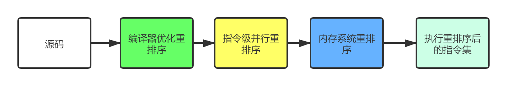
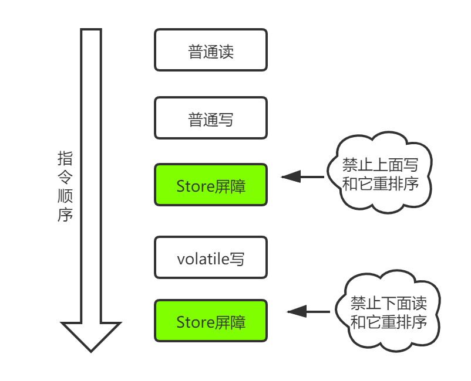
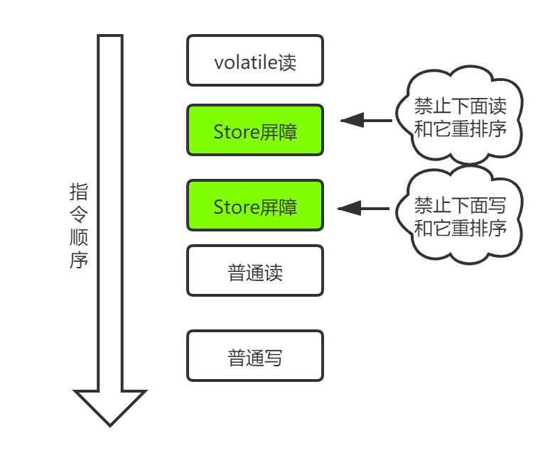

开始讲这个题目之前，先来聊一下什么是线程安全。多个线程访问同一个对象时，如果不用考虑这些线程在运行时环境下的调度和交替执行，也不需要进行额外的同步，或者在调用方进行任何其他操作，调用这个对象的行为都可以获得正确的结果，那么这个对象就是线程安全的。
这是一个很常见的面试题，再接着往下深入一点，如何保证线程安全呢？线程安全一般是从三个方面考虑：
- 原子性:
synchronized确保同一时间只有一个线程能拿到锁,进入当前代码块 - 可见性：
volatile保证不同线程对共享变量操作的可见性,synchronized获得锁后会清空工作内存，从主存拷贝最新的变量到工作内存(副本)，再将修改后的副本重新刷到主存中，然后释放锁，其他没有获得锁的线程都处于阻塞状态，因此也能保证数据可见性。 - 有序性：
volatile本身就具有指令重排序，synchronized和Lock保证每个时刻是有一个线程执行同步代码，自然就保证了有序性。
说完这些我们开始看一个控制台小程序：
1 | /** |
控制台打印的是flag is true，现在应该不足为奇了。那如何让计算机对你说“你真厉害”呢。这时候应该可以胸有成竹的选择volatile或者synchronized。
先来看一下synchronized实现。
我这里大致写了一下,这里只有第一种会打印“你真厉害”，但是第二种并不会打印。第一种每循环一次都会获取一次锁，当执行完成之后，会将flag值从工作内存刷新到主存中。但是第二种，他在获取锁的时候，flag仍然是false的，然后就进入了无限死循环。并不会将flag值更新到主存中。
1 | public static void main(String[] args) { |
可见性
现在来看一下加volatile修饰的方式,每个线程在操作数据的时候，会将数据从主内存中拷贝一份副本到当前线程的工作内存，如果该线程对于副本操作，并且写回了。
那么其他线程所取得的副本就失效了。需要对数据操作的话就又得从主存中重新读取。而volatile可以保证不同线程对于该变量的可见性，也就是当一个线程对于该数据操作之后，并写回主存，其他线程就可以立即获得该变量最新的值。
1 | class Test extends Thread{ |
那当有多个线程同时对flag进行操作，那刷新到主存中以谁的数据为准呢？对于这种缓存不一致性问题，通常有两种方式：
- 通过在总线加LOCK#锁的方式（锁总线）
- 通过某些缓存一致性协议（锁缓存）
锁总线
CPU总线是CPU与所有芯片连接的主干道，当一个CPU要操作数据的时候，它向总线发送一个LOCK#的信号，其他处理器就会处于阻塞状态。从而使该CPU可以独享此共享内存。但是锁总线会导致其他CPU与共享内存之间的通信被锁住，导致对其他共享内存的数据也无法操作，因此开销较大。
锁缓存
以在Intel系列中广泛使用的MESI协议为例，当CPU操作数据的时候，如果发现该变量是一个共享变量，即在其他处理器中也存在该变量的副本。那么就会发信号告知该CPU将该变量的缓存行置为无效状态。当其他CPU需要读取这个数据的时候，会查看该变量是否是失效状态，如果是失效状态，会重新从共享内存中重新读取该变量的值。至于CPU是如何发现数据是否已经过期。是CPU通过嗅探在总线上传播的数据来检查自己的缓存是否过期。当处理器发现自己缓存行对应的内存地址被修改，就会将当前处理器的缓存行置为失效状态，当处理器需要对这个数据进行读取(操作)的时候，会重新从系统内存中读取该数据。
由于volatile的mesi缓存一致性协议需要不断的从主内存嗅探和cas不断循环无效交互导致总线带宽达到峰值
(总线风暴)。因此不要大量使用volatile。
指令重排序
为了提高性能，编译器和处理器常常会对既定的代码执行顺序进行指令重排序。
一段源码，到最后执行，需要经历那些重排序规则呢？

一个好的内存模型，会尽可能小的去约束处理器和编译器，在不改变程序执行结果的情况下，尽可能提高程序的执行效率。因此JMM会尽量减少对底层的约束，使其能够发挥自身优势。
一般重排序分为以下三种：
- 编译器的重排序：编译器在不改变单线程语义的情况下，可以重新定义语句执行顺序
- 指令集并行的重排序：现代处理器采用了指令级并行技术来将多条指令重叠执行。如果不存在数据依赖性，处理器可以改变语句对应机器指令的执行顺序
- 内存系统的重排序：由于处理器使用缓存和读/写缓冲区，这使得加载和存储操作看上去可能是在乱序执行的
这里要提到一个概念：as-if-serial。
不管怎么重排序，单线程下的执行结果不能被改变。编译器、runtime和处理器都必须遵守as-if-serial语义。
Volatile如何禁止重排序
java编译器会在生成指令系列时在适当的位置会插入内存屏障指令来禁止特定类型的处理器重排序。并且为了实现volatile的内存语义，为了实现volatile的内存语义，JMM会限制特定类型的编译器和处理器重排序，JMM会针对编译器制定volatile重排序规则表：
| 能否重排序 | 第二个操作 | ||
|---|---|---|---|
| 第一个操作 | 普通读（写） | volatile（读） | volatile（写） |
| 普通读（写） | NO | ||
| volatile（读） | NO | NO | NO |
| volatile（写） | NO | NO |
volatile
写是在前面和后面分别插入内存屏障，而volatile读操作是在后面插入两个内存屏障。


上述重排序规则，为了提高处理速度，JVM往往会对代码进行指令重排序优化。并发编程下指令重排序会带来一些安全隐患：如指令重排序导致的多个线程操作之间的不可见性。
从JDK5开始，提出了happens-before的概念，通过这个概念来阐述操作之间的内存可见性。
happens-before
如果一个操作执行的结果需要对另一个操作可见，那么这两个操作之间必须存在happens-before关系。volatile域规则：对一个volatile域的写操作，happens-before于任意线程后续对这个volatile域的读。
如果现在我的变了flag变成了false，那么后面的那个操作，一定要知道我变了。
一定要记住volatile无法保证原子性，如果非要保证原子性，可以采用concurrent包下的一些原子类或者给加锁。关于volatile的应用，可以看之前有一篇讲单例的文章2020-09-25-那些年我们学过的设计模式，你还记得几个（一）。
volatile和synchronized的区别
- volatile只能修饰实例变量和类变量，而synchronized可以修饰方法，以及代码块。
- volatile保证数据的可见性，但是不保证原子性(多线程进行写操作，不保证线程安全);而synchronized是一种排他(互斥)的机制。
- volatile用于禁止指令重排序：可以解决单例双重检查对象初始化代码执行乱序问题。
- volatile可以看做是轻量版的synchronized，volatile不保证原子性，但是如果是对一个共享变量进行多个线程的赋值，而没有其他的操作，那么就可以用volatile来代替synchronized，因为赋值本身是有原子性的，而volatile又保证了可见性，所以就可以保证线程安全了。
总结
volatile修饰符适用于以下场景：某个属性被多个线程共享，其中有一个线程修改了此属性，其他线程可以立即得到修改后的值，比如booleanflag;或者作为触发器，实现轻量级同步。
volatile属性的读写操作都是无锁的，它不能替代synchronized，因为它没有提供原子性和互斥性。因为无锁，不需要花费时间在获取锁和释放锁_上，所以说它是低成本的。
volatile只能作用于属性，我们用volatile修饰属性，这样compilers就不会对这个属性做指令重排序。
volatile提供了可见性，任何一个线程对其的修改将立马对其他线程可见，volatile属性不会被线程缓存，始终从主存中读取。
volatile提供了happens-before保证，对volatile变量v的写入happens-before所有其他线程后续对v的读操作。
volatile可以使得long和double的赋值是原子的。
volatile可以在单例双重检查中实现可见性和禁止指令重排序，从而保证安全性。

...
...